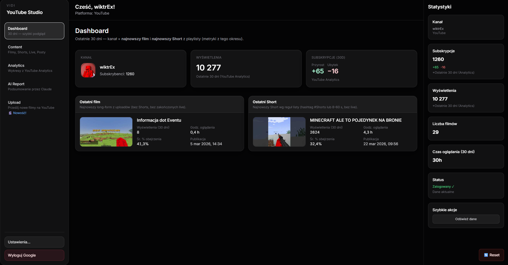
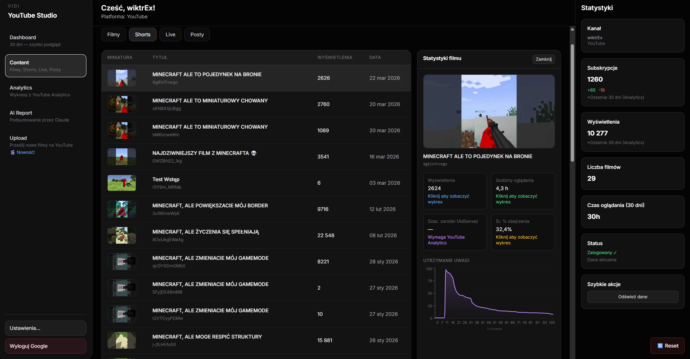
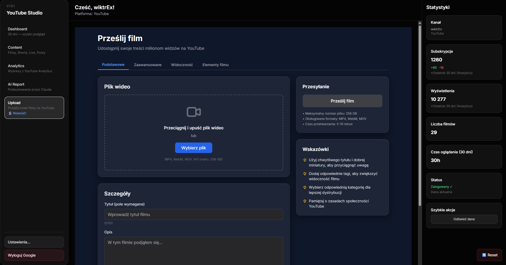
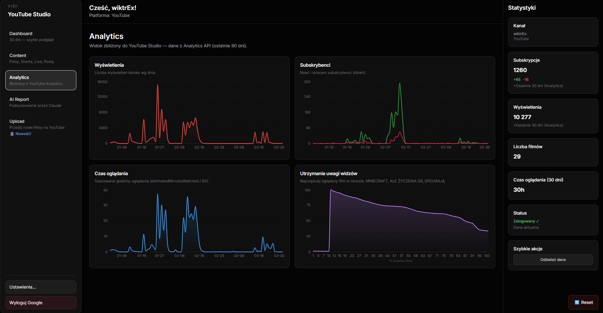

Experience
YouTube Analytics
A powerful YouTube statistics monitoring application that combines elegance with comprehensive analytics. Use preconfigured monitoring tools that are ready to use, track your favorite channels and easily monitor YouTube performance metrics.
Why Choose Vidi?
Everything you need for YouTube analytics, nothing you don't.
Real-time Analytics
Built on a minimal base, Vidi is optimized for speed and responsiveness, delivering instant YouTube statistics updates.
Channel Monitoring
With comprehensive channel tracking and performance metrics built-in, you can easily monitor YouTube analytics after only a couple of clicks.
Performance Insights
Comes pre-packaged with advanced analytics tools and performance tracking that can boost your YouTube monitoring experience.
Beautifully Crafted Interface
An interface that's both powerful and a pleasure to use for YouTube analytics.
Interface Styles




Frequently Asked Questions
However, you can pick carefully crafted desktop application instead during the installation. With it, you can experience truly marvelous native effects all around the application.
Open-Source Project
Vidi is built with fully open-sourced code. Fork, modify, or contribute on GitHub.
Visit GitHub